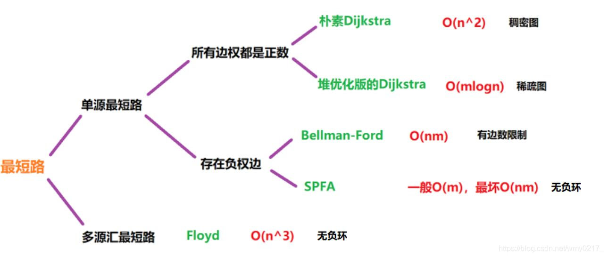

多值依赖的意义
多值依赖与函数依赖的区别
多值依赖的定义
多值依赖性质的证明(使用 temple 证明)
传递性
函数依赖可以看作是多值依赖的特殊情况
并规则
分解规则
若 X→→Y，Y→→Z，则 X→→Z-Y。
证明该性质时，其存在两种特殊情况：
① 在 X∩[Y∪Z]=Ø 时，设存在 U 的子集 X，Y，Z，K(X,Y,Z,K∈U)，其中 K=U-X-Y-Z。存在元组 S，T 属于关系 r(S,T∈r)且 S[X]=T[X],并将 YZ 元组分解 Y= (Y-Z)∪(Y∩Z)，Z= (Z-Y)∪(Y∩Z)，则有如表 1.3.3 下列元组
| X | Y-Z | Y∩Z | Z-Y | K | |
|---|---|---|---|---|---|
| S | S[X] | S[Y-Z] | S[Y∩Z] | S[Z-Y] | S[K] |
| T | T[X] | T[Y-Z] | T[Y∩Z] | T[Z-Y] | T[K] |
表 1.3.3
由 X→→Y 可得，w，v 元组属于关系 r(W,V∈r)，则如表 1.3.4 下列元组
| X | Y-Z | Y∩Z | Z-Y | K | |
|---|---|---|---|---|---|
| W | W[X] | S[Y-Z] | S[Y∩Z] | T[Z-Y] | T[K] |
| V | V[X] | T[Y-Z] | T[Y∩Z] | S[Z-Y] | S[K] |
表 1.3.4
其中 W[X]=V[X]=S[X]=T[X]。将现有 S,T,W,V 作为已知条件进行变换。
若需要求得 X→→Z-Y 成立，则根据多值依赖的元组定义则需要证明以下元组 W'，V'满足 W'，V'属于关系 r(W',V'∈r)，即如表 1.3.5 下列元组
| X | Y-Z | Y∩Z | Z-Y | K | |
|---|---|---|---|---|---|
| W' | S[X] | T[Y-Z] | T[Y∩Z] | S[Z-Y] | T[K] |
| V' | T[X] | S[Y-Z] | S[Y∩Z] | T[Z-Y] | S[K] |
表 1.3.5
现对 S，W 元组由 Y→→Z 可得 W1 ,V1 元组，其中 Y= (Y-Z)∪(Y∩Z)，则有如表 1.3.6 下列元组
| X | Y-Z | Y∩Z | Z-Y | K | |
|---|---|---|---|---|---|
| W1 | S[X] | S[Y-Z] | S[Y∩Z] | S[Z-Y] | T[K] |
| V1 | S[X] | S[Y-Z] | S[Y∩Z] | T[Z-Y] | S[K] |
表 1.3.6
同理，对 T，V 元组由 Y→→Z 可得 W2 ,V2 元组，其中 Y= (Y-Z)∪(Y∩Z) ，则有如表 1.3.7 下列元组
| X | Y-Z | Y∩Z | Z-Y | K | |
|---|---|---|---|---|---|
| W2 | T[X] | T[Y-Z] | T[Y∩Z] | T[Z-Y] | S[K] |
| V2 | T[X] | T[Y-Z] | T[Y∩Z] | S[Z-Y] | T[K] |
表 1.3.7
又有 S[X]= T[X]，则可知 W'=V2，V'=V1，即 X→→Z-Y。
②.在一般情况下，需要考虑元组 X 与元组 Y∪Z 的关系。设存在 U 的子集 X，Y，Z，K(X,Y,Z,K∈U)，其中 K=U-X-Y-Z，存在元组 S，T 属于关系 r(S,T∈r)且 S[X]=T[X]。现将 Y∪Z 分解：Y∪Z= [Y-Z]∪[Y∩Z]∪[Z-Y]，则需将元组 X 分解：X=X0∪X1∪X2∪X3，其中 X1=X∩(Y-Z),X2=X∩[Y∩Z],X3=X∩[Z-Y],X0=X-X1-X2-X3，即 X0，X1，X2，X3 两两互不相交。则有如表 1.3.8 下列元组
| X0 | X1 | X2 | X3 | Y-Z-X1 | Y∩Z-X2 | Z-Y-X3 | K | |
|---|---|---|---|---|---|---|---|---|
| S | S[X0] | S[X1] | S[X2] | S[X3] | S[Y-Z-X1] | S[Y∩Z-X2] | S[Z-Y-X3] | S[K] |
| T | T[X0] | T[X1] | T[X2] | T[X3] | T[Y-Z-X1] | T[Y∩Z-X2] | T[Z-Y-X3] | T[K] |
表 1.3.8
其中有 X→→Y 元组定义可得 S[Xi] =T[Xi] (i=1,2,3)，和新元组 W，V。则有如表 1.3.9 下列元组
| X0 | X1 | X2 | X3 | Y-Z-X1 | Y∩Z-X2 | Z-Y-X3 | K | |
|---|---|---|---|---|---|---|---|---|
| W | W[X0] | S[X1] | W[X2] | W[X3] | W[Y-Z-X1] | W[Y∩Z-X2] | W[Z-Y-X3] | W[K] |
| V | V[X0] | V[X1] | V[X2] | T[X3] | V[Y-Z-X1] | V[Y∩Z-X2] | V[Z-Y-X3] | V[K] |
表 1.3.9
通过对比特殊情况与一般情况，则可发现在 Y→→Z 运用的过程中发生交换的元组分别为 Y-Z-X1, Y∩Z-X2, Z-Y-X3, K。即在一般情况下，通过 Y→→Z，(S,W)，(T,V)得到的新元组(W1,V1)，(W2,V2)其中(V2, V1)与所需要得到的 X→→Z-Y 的元组(W',V')相同。
即在一般情况下，若 X→→Y，Y→→Z，则 X→→Z-Y 成立。
王壮_multivalued dependencies_whpu.pdf
王壮_Intelligent algorithms_whpu.pdf
#二维数组版
const int w[1024],c[1024]
int n,m;
cin>>n>>m;
for(int i=1;i<=n;i++) cin>>w[i]>>c[i];
for(int i=1;j<=n;j++)//i是物品个数
for(int j=1;j<=m;j++)//j是背包空间
if(j<w[i]) dp[i][j]=dp[i-1][j];
eles dp[i][j]=max(dp[i-1][j],dp[i][j-w[i]]+c[i])
cout<<dp[n][m];
#一维数组版
int n,m;cin>>n>>m;
for(int i=1;i<=n;i++){
int v,m;cin>>v>>m;
for(int j=m;j>=v;j--) dp[j]=max(dp[j-1],dp[j-v]+m);
}//从m最大值开始遍历且最小值大于物品体积是为保证能够加入物品
cout<<dp[m];
逐渐添加元素入背包，然后求在每个容量下的最大值(利用动态转移)
在逐渐增加背包容量下，当容量小于添加元素的体积时，该状态下的最大值 v1 与该容量下未添加元素时的最大值 v2 相同，而在大于添加元素的体积时，该状态需判断添加新元素与剩余空间所对应的值之和 v3 与未添加时的值 v1 的大小，取最大值
带你学透 0-1 背包问题！| 关于背包问题，你不清楚的地方，这里都讲了！| 动态规划经典问题 | 数据结构与算法_哔哩哔哩_bilibili
最直接版完全背包
int n,m; cin>>n>>m;
for(int i=1;i<=n;i++) cin>>w[i]>>c[i];
for(int i=1;i<=n;i++)
for(int j=1;j<m;j++)
for(int k=0;k<j/w[i];k++)
dp[j]=max(dp[j],dp[j-k*w[i]]+k*c[i]);
cout<<dp[m];
优化版二维完全背包
在完全背包问题中，物品可多项选择，及可以竖向转移—在未添加新物品时该容量下的值(01 背包问题原理)，和竖向转移—在添加新物品的情况加进行动态规划(及在 j-W[i]的背包大小所对应的值加上 C[i]值)，然后取最大值。
int n,m; cin>>n>>m;
for(int i=1;i<=n;i++) cin>>w[i]>>c[i];
for(int i=1;i<=n;i++)
for(int j=1;j<m;j++){
dp[i][j]=dp[i-1][j];//竖向转移
if(j-w[i]>=0) dp[i][j]=max(dp[i][j],dp[i][j-w[i]]+c[i]);//横向转移
}
cout<<dp[n][m];
最简版完全背包问题
int n,m; cin>>n>>m;
for(int i=1;i<=n;i++) cin>>w[i]>>c[i];
for(int i=1;i<=n;i++)
for(int j=w[i];j<=m;j++){
dp[j]=max(dp[j],dp[j-w[i]]+c[i]);
cout<<dp[m];
背包九讲系列 1——01 背包、完全背包、多重背包 - 简书 (jianshu.com)
贪心算法，又名贪婪法，是寻找最优解问题的常用方法，这种方法模式一般将求解过程分成若干个步骤，但每个步骤都应用贪心原则，选取当前状态下最好/最优的选择（局部最有利的选择），并以此希望最后堆叠出的结果也是最好/最优的解。
贪婪法的基本步骤：
步骤 1：从某个初始解出发；
步骤 2：采用迭代的过程，当可以向目标前进一步时，就根据局部最优策略，得到一部分解，缩小问题规模；
步骤 3：将所有解综合起来。

每次从未标记的节点中寻找距离出发点最近的节点，标记，收录到最优路径集合中
计算刚加入的节点 A 到相邻节点 B 的距离，不包括已标记的节点
若 节点A到源点的距离 + 节点A到节点B的边长 < 节点B到源点的距离，更新节点 B 到源点的值
重复以上步骤，直到未标记的节点未空时，停止算法
【算法】最短路径查找—Dijkstra 算法_哔哩哔哩_bilibili
void dijkstra(int dist[], bool st[], int grid[][N])
{
dist[x] = 0;
for(int i = 1; i<=n; i++)
{
int t = -1;//标记最小权值点
for(int j = 1; j<=n; j++)//寻找最小权值点
if(st[j] == false && (t == -1 || dist[j] < dist[t]))
t = j;
st[t] = true;
for(int j = 1; j<=n; j++)
dist[j] = min(dist[j], dist[t] + grid[t][j]);
}
}
和 dijkstra 不同的是，BF 算法可以解决负环的最短路径问题，同时可以判断负环是否存在。
环：从某个顶点出发、经过若干个不同的顶点，可以回到该顶点的情况。
零环、正环、负环
初始化源点 s 到各个点 v 的路径 dis[v] = ∞，dis[s] = 0。
进行 n - 1 次遍历，每次遍历对所有边进行松弛操作，满足则将权值更新。
松弛操作：以 a 为起点，b 为终点，ab 边长度为 w 为例。dis[a]代表源点 s 到 a 点的路径长度，dis[b]代表源点 s 到 b 点的路径长度。如果满足下面的式子则将 dis[b] 更新为 dis[a] + w。
dis[b] > dis[a] + w
遍历都结束后，若再进行一次遍历，还能得到 s 到某些节点更短的路径的话，则说明存在负环路。
理由在于：对于给定 n 个节点的图，从 i 到 j，最短路径至多有 n-1 条路径，当出现 n 条路径时，说明在该条路径上至少存在一个环，也就是如果在进行一次遍历，如果节点的最短路径还能得到更新，那么只有环存在时，才会更新路径
struct edge{
int v, w;//v是出边，w是当前点到出边v的权值
};
vector<edge> e[maxn];
int dis[maxn];
const int inf = 0x3f3f3f3f;
bool bellmanford(int s)
{
memset(dis, 0x3f, sizeof(dis));
dis[s] = 0;
bool flag; // 判断一轮循环过程中是否发生松弛操作
for (int i = 1; i <= n; i++)//至多遍历n-1次得到最短路径
{
flag = false;
for (int u = 1; u <= n; u++)//依次遍历每一个点
{
if (dis[u] == inf)//当前点到源点还不存在路径时，不更新该点，理由如下
continue;// 无穷大与常数加减仍然为无穷大，因此最短路长度为 inf 的点引出的边不可能发生松弛操作
for (auto ed : e[u])//遍历当前点的所有邻边
{
int v = ed.v, w = ed.w;
if (dis[v] > dis[u] + w)
{
dis[v] = dis[u] + w;
flag = true;//存在松弛操作，打上标记
}
}
}
if (!flag)// 没有可以松弛的边时就停止算法
break;
}
// 第 n 轮循环仍然可以松弛时说明 s 点可以抵达一个【负环】
return flag;
}
设定矩阵 ，其中
视频讲解：最短路径（二）Floyd 算法_哔哩哔哩_bilibili
解决图中任意点到某一点之间的最短路问题，例如 P 点到 M 点，中间可以直达也可以经过其他点到达
在视频中拓展：
矩阵依据公式 迭代 n 次后得到 i 到 j 的最短路径，但是得不到经过那些点，可以用一个额外的数组来记录经过的点，在视频讲解的末尾位置
矩阵依据公式 可以得到 i 到 j 的所有通路集合中的通路的最大边的的最小值，就是在这一堆通路中，每条通路都有一条最大的边，在将这些边中的最小值取出
//针对无向图
void floyd(){
//设k为中间节点，检查从i到j的距离和i到k，k到j（即以k作为中间节点绕行）的距离
for(int k=0; k<n; k++){
for(int i = 0; i<n; i++){
for(int j = 0; j<n; j++){
grid[i][j] = grid[j][i] = min(grid[i][j], grid[i][k] + grid[k][j]);
}
}
}
}
Prim （普里姆）算法是另一种常见并且好写的最小生成树算法。该算法的基本思想是从一个结点开始，不断加点（而不是 Kruskal 算法的加边）。具有贪心的思想。
具体来说，每次要选择距离集合（已访问点集合）最小的一个结点，以及用新的边更新其他结点的距离。
其实跟 Dijkstra 算法一样，每次找到距离最小的一个点，可以暴力找也可以用堆维护。
堆优化的方式类似 Dijkstra 的堆优化，但如果使用二叉堆等不支持 decrease-key 的堆，复杂度就不优于 Kruskal，常数也比 Kruskal 大。所以，一般情况下都使用 Kruskal 算法，在稠密图尤其是完全图上，暴力 Prim 的复杂度比 Kruskal 优，但 不一定 实际跑得更快。
时间复杂度：O(n^2)
初始化：dist[N]为所有点到集合的距离，初始化为无穷大
任选一个点，然后将该点加入最短路集合
寻找距离到最短路集合最近的点，同时将该点加入最短路集合中
遍历该点的邻接点，更新邻接点到集合的距离 dist
重复三四步骤，n 次循环，即遍历 n 个点，得到最小生成树
在每一次选择一个点加入最小生成树集合中后，都会更新该点的所有邻接点到集合的距离，我们只要维护 dist 这个距离就可以得到答案，例如
第一次循环：在选取第一个点的时候，t = 0，vis[0]==true，更新了该点的所有邻接点到 0 点的距离
第二次循环：选取了到 0 点最近的一个点，加入最小生成树集合，更新该点的所有邻接点到该点的距离
重复 n 次循环，也就是 n 个点，值得注意的是，我们每次选取的都是这个集合的所有邻接点，而这些邻接点都被更新过了，因此是可以得到答案的。
同时：还需要注意，如果在除开第一次选的点以外的点中，找到一个到集合距离无穷大的点，那么也就是说这个点是孤立点，一定是无法构成最小生成树的，即可返回 impossible
int grid[N][N], n, m;
int dist[N], vis[N];
int prim(){
memset(dist, 0x3f, sizeof(dist));
int sum = 0;
for(int i = 0; i<n; i++){
int t = -1;
for(int j = 1; j<=n; j++){
if(!vis[j] && (t == -1 || dist[t] > dist[j]))
t = j;
}
vis[t] = true;
//如果该点非第一个点，但是该点到集合的距离是无穷大，也就是说该点是孤立出来的
if(i && dist[t] == INF)
return INF;
if(i)//该点非第一个点
sum += dist[t];
for(int j = 1; j<=n; j++)
dist[j] = min(dist[j], grid[t][j]);
}
return sum;
}
Kruskal （克鲁斯克尔）算法是一种常见并且好写的最小生成树算法，由 Kruskal 发明。该算法的基本思想是从小到大加入边，是个贪心算法。
使用：并查集、图的存储、贪心
时间复杂度：O(mlogm)（m 是边数）
将所有边按权值从小到大排序，时间复杂度 O(mlogm)
依次遍历所有边，如果某边的两点不构成回路，即加入最短路径集合
统计最短路径集合中的边个数，如果小于 n-1，即不构成最小生成树，等于 n-1，即可构成最小生成树
struct edge{
int a, b, w;//始点，终点，权
}edges[M];
int p[N], cnt;
void add(int a, int b, int w){
edges[cnt].a = a, edges[cnt].b = b, edges[cnt].w = w, cnt++;
}
int find(int x){
if(p[x] != x)
p[x] = find(p[x]);
return p[x];
}
int kruskal(){
for(int i = 1; i<=n; i++) p[i] = i;
sort(edges, edges + cnt);
int sum = 0, en = 0;//权值和，路径条数
for(int i = 0; i<cnt; i++){
int a = edges[i].a, b = edges[i].b, w = edges[i].w;
int pa = find(a), pb = find(b);
if(pa != pb){
p[pa] = pb;
sum += w;
en++;
}
}
if(en < n - 1){
cout << "无法构成最小生成树";
return -1;
}
return sum;
}